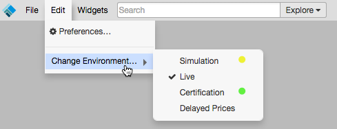

While trading in an opened workspace, you can change trading environments (e.g., from Simulation to Live) by using the Edit menu available at the top of the workspace title bar.
Note: Before changing environments, consider saving your workspace. Any unsaved changes made to your opened workspace may be lost while changing to a different trading environment.
To change trading environments:
On the workspace title bar, click Edit and select Change Environment....

- Select the desired trading environment:
- Simulation — Provides access to exchange price feeds with simulated order entry. All orders are matched by our internal matching engine and never submitted to the exchange. This allows users to test out new trading strategies, provide training for traders, and API solution testing, etc.
- Live: Provides connections to the exchange price feeds and matching engines for live trading.
- Certification — Provides connections to the exchange certification environment for both prices and order matching.
- Delayed Prices — Provides access to 15-minute delayed prices and our internal matching engine. This option allows you to learn about the TT platform without incurring the cost of receiving live prices from exchanges.
- If applicable, confirm that you want to change environments in the pop-up dialog box opened by your browser (e.g., Chrome).